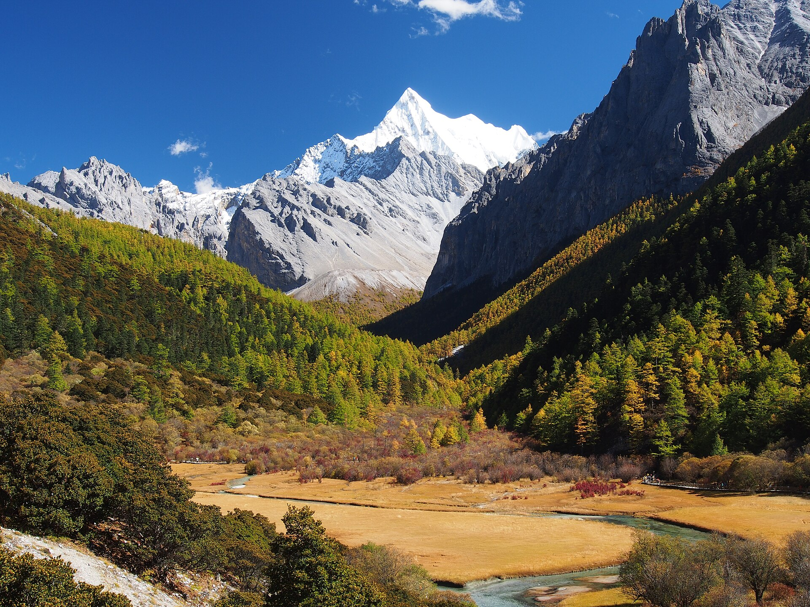
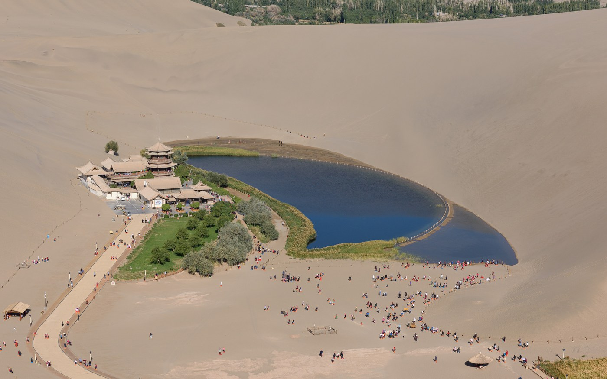
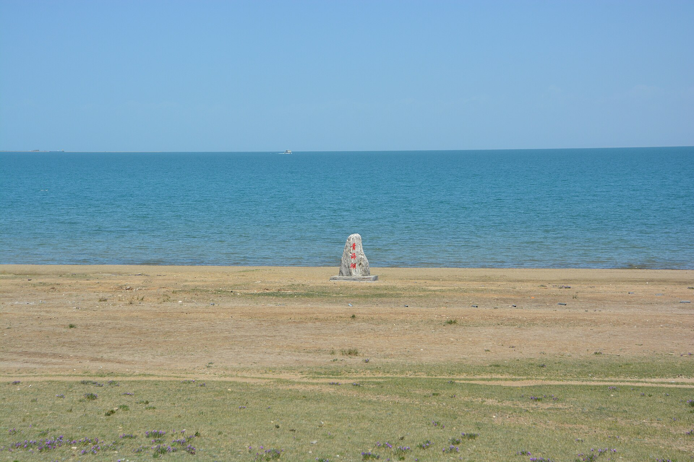

青岛—威海—济南—开封慢游线
路线：广州/佛山 → 青岛 → 威海 → 济南 → 开封 → 郑州机场 → 广州/佛山
天数：7天6晚｜7月20—26日
行程提示：已按飞机、高铁、租车与六晚住宿完成执行拆分，费用明细在路线页末尾按需查看。
强度：中等，不爬山；海边租车、济南泉水、万岁山夜场
查看路线选择一条路线，进入当天可执行的旅行手册：几点出发、怎么走、吃什么、住哪里、门票预约、预算和应急方案都在里面。
路线：广州/佛山 → 青岛 → 威海 → 济南 → 开封 → 郑州机场 → 广州/佛山
天数：7天6晚｜7月20—26日
行程提示：已按飞机、高铁、租车与六晚住宿完成执行拆分，费用明细在路线页末尾按需查看。
强度：中等，不爬山；海边租车、济南泉水、万岁山夜场
查看路线
路线：成都、黄龙、九寨沟、若尔盖花湖、黄河九曲第一湾、松潘
天数：7天6晚
行程提示：大交通、住宿、包车和景区门票均在详情页按需核对
强度：中等偏累，有高原和长车程
查看路线
路线：广州/佛山 → 成都 → 稻城/香格里拉镇 → 亚丁景区 → 稻城 → 成都 → 广州/佛山
天数：7天6晚候选版
行程提示：不并入九寨沟；以观光车、草甸、神山观景为主，牛奶海/五色海不设为必须完成。
强度：中高，高原与步行不可完全避免；更适合预留充足时间单独去。
查看候选路线

路线：西宁 → 青海湖 → 茶卡 → 大柴旦 → 水上雅丹 → 黑独山 → 敦煌 → 嘉峪关 → 张掖 → 西宁
天数：8天7晚环线；广州/佛山至西宁建议另留D0，返程建议D9。
行程提示：把抖音路线拆为每日可执行卡，保留全清单，同时标明转场、天气和夜路止损点。
强度：高，约3000公里；正规拼车/包车或小团优先，不建议单人新手自驾。
查看执行手册